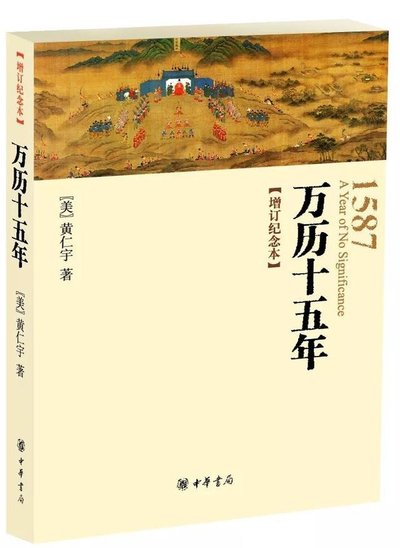
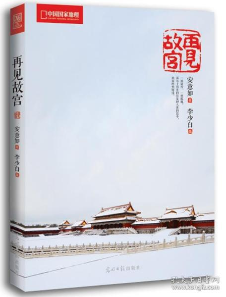

My Recommended Books
my page books warmness
light love

《万历十五年》主要内容是，万历十五年，亦即公元1587年，在西欧历史上为西班牙舰队全部出动征英的前一年;而在中国，这平平淡淡的一年中，发生了若干为历史学家所易于忽视的事件。这些事件，表面看来虽似末端小节，但实质上却是以前发生大事的症结，也是将在以后掀起波澜的机缘。
元辅张居正死后被清算，大伴冯保被驱逐出京，皇帝至此已经实际掌握了政府的大权 。但是不久以后，他就会发觉他摆脱了张、冯之后所得到的自主之权仍然受到种种约束，即使贵为天子，也不过是一种制度所需要的产物。他逐渐明白，倒掉张居正，真正的受益者并不是他自己。 -----《万历十五年》

时光漫游于幽深的宫殿，古老壮美的风景翩翩掠过历史再一次回归寂静，朱红宫墙角落一处青苔的叹息，恰梦醒时分，大幕落下。百转千回，一代代王朝更迭，一朵朵娇颜零落。生命陷落于紫禁城，在限定的街巷内行走。或徐或疾，唯殊途同归。紫禁城，就像一出真实的幻梦。它是历史留给后人的恢弘乐章，提醒我们正经历着世间变幻和无常。
若能看破繁华背后的疮痍，就会知晓，凡所有的，必将失去。一切的斗争，所有的欲望，只不过是追梦人追梦而已。 —— 安意如 《再见故宫》
凉秋忽至 木叶换色 可风不急 日又不够暖 恰好一个拥抱足够取暖 我的意思是 我们该见一面了
我希望我能在光陆怪离的现代社会找到自己心灵栖息的小岛